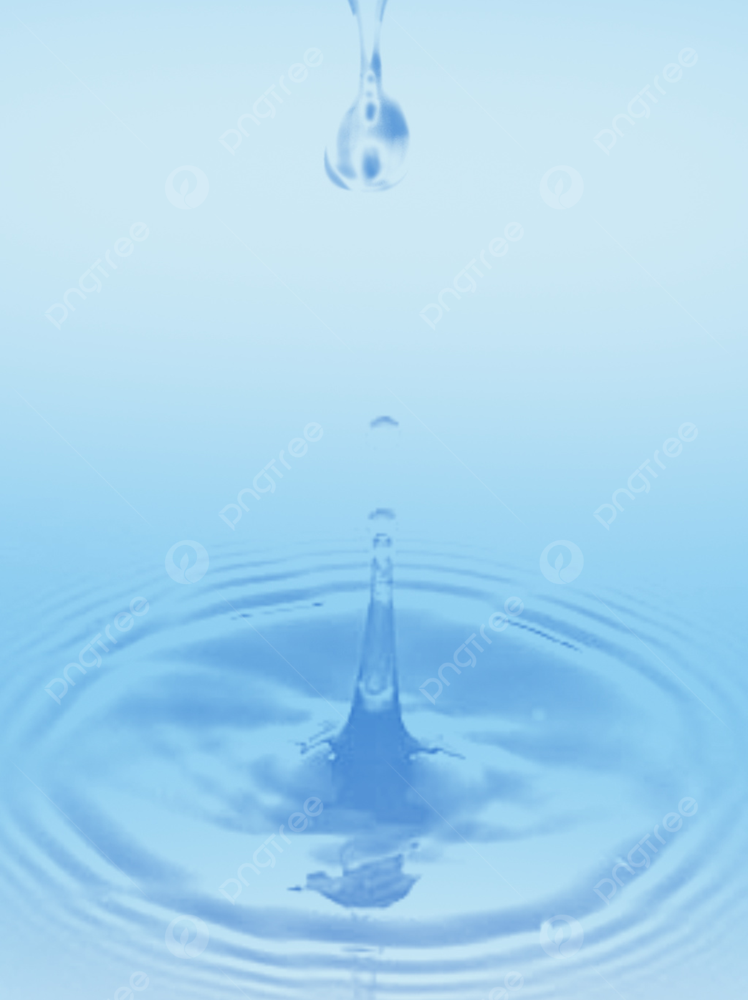

Gelombang Dasar
Pelajari konsep gelombang melalui computational thinking dan coding interaktif
Rambatan energi melalui medium
Gelombang dapat diklasifikasikan berdasarkan kebutuhan medium perambatannya:
Memerlukan medium (suara, air, tali)
Tidak perlu medium (cahaya, radio)
Mengembangkan kemampuan berpikir komputasional melalui pemecahan masalah gelombang
Mampu mengimplementasikan konsep gelombang dalam bentuk algoritma sederhana
Memahami karakteristik dan perilaku gelombang dalam kehidupan nyata
Menganalisis dan menyelesaikan permasalahan terkait gelombang
Sedang diputar: Pengenalan Gelombang
Buat gelombang sinus dengan amplitudo 50 dan frekuensi 2!
Selamat belajar! Semoga sukses.
Modul pembelajaran WaveLearn adalah media interaktif untuk mempelajari konsep gelombang fisika dengan pendekatan computational thinking.
Simpangan maksimum partikel dari posisi setimbang. Satuan: meter (m).
Banyaknya getaran per detik. Satuan: Hertz (Hz). Rumus: f = 1/T
Jarak antara dua titik yang berfase sama berurutan. Satuan: meter (m).
Waktu untuk satu getaran penuh. Satuan: sekon (s). Rumus: T = 1/f
Kecepatan perambatan gelombang. Rumus: v = λ × f
Beda fase (Δφ) menunjukkan perbedaan keadaan getar antara dua titik.
y_total = y1 + y2. Jumlah algebraik dari gelombang-gelombang yang bertemu.
Sudut datang = Sudut pantul. Terjadi pada batas medium.
Pembengkokan saat masuk medium berbeda kecepatan.